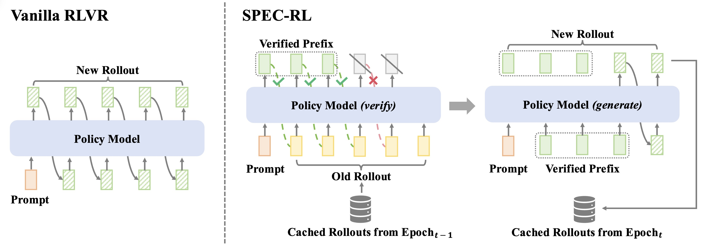
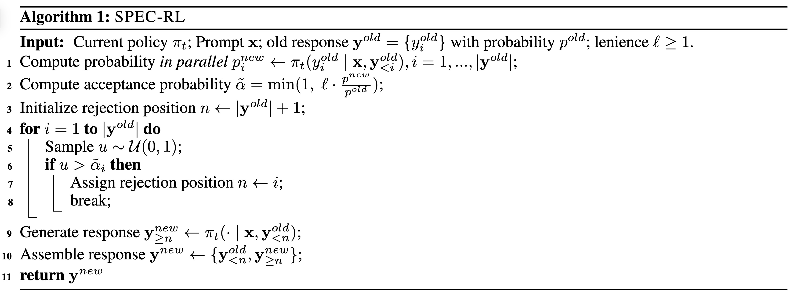
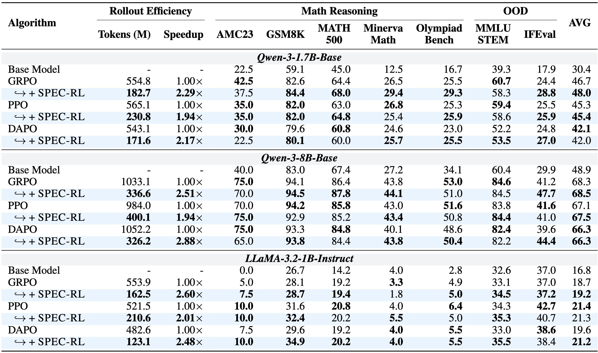
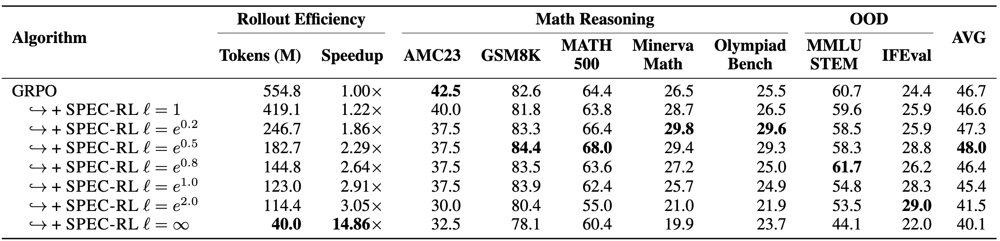
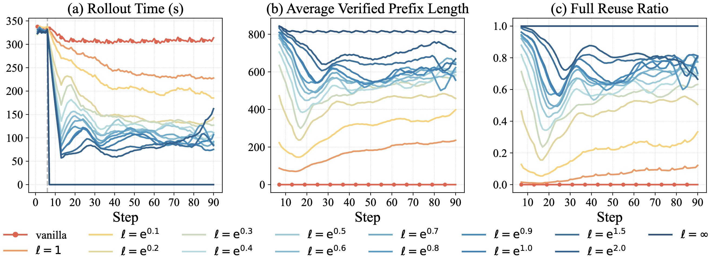
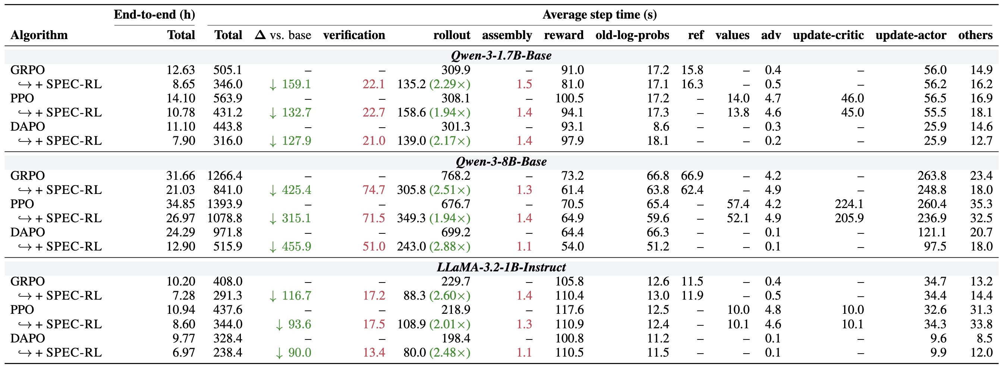
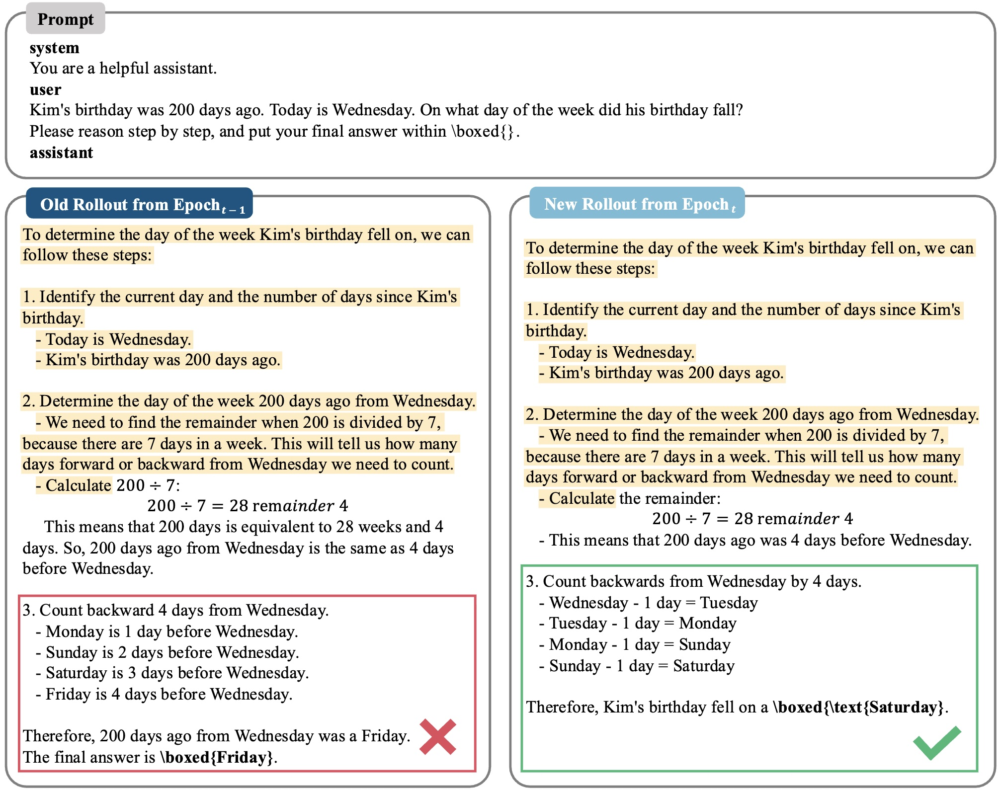
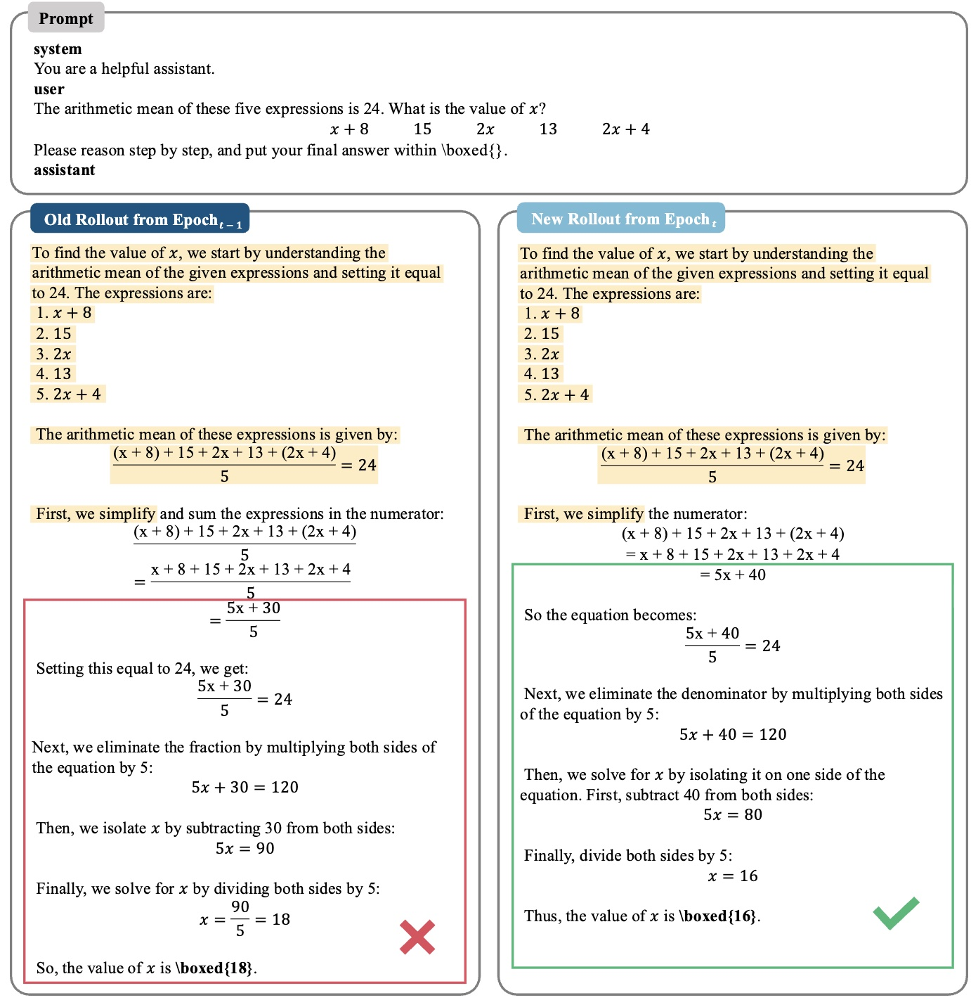
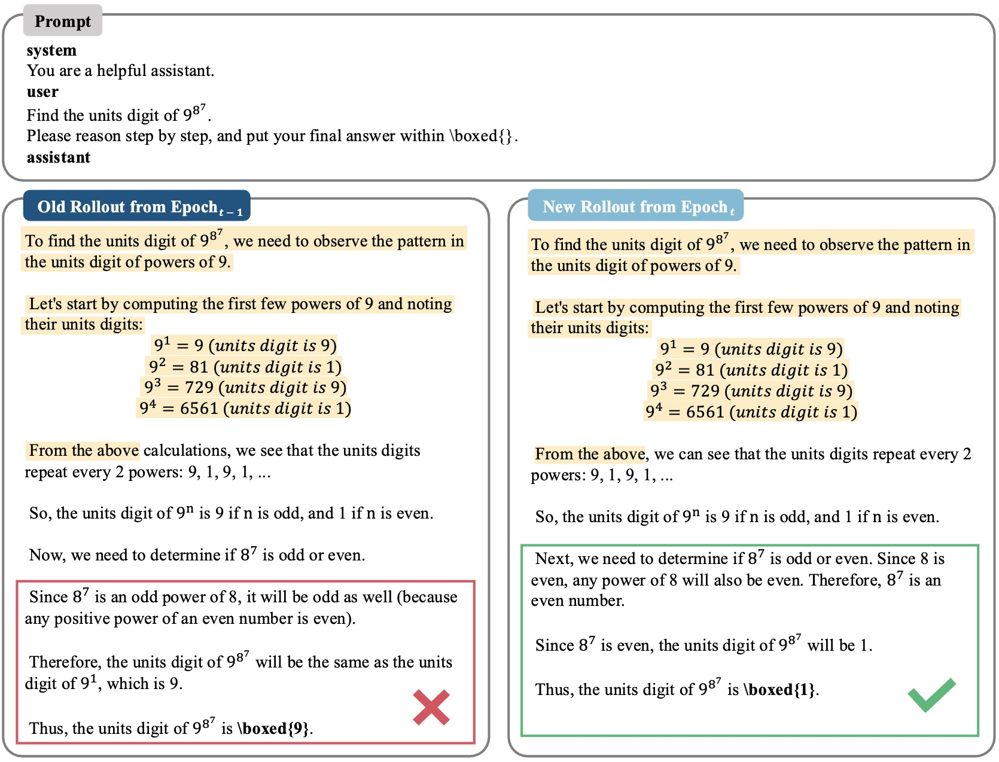
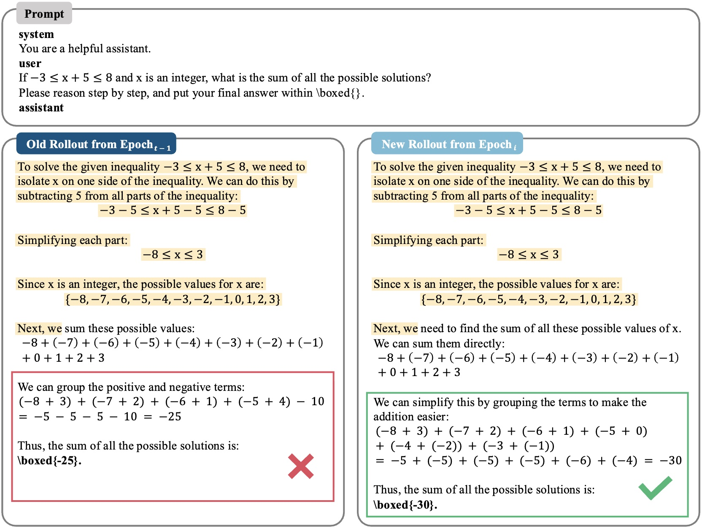

Large Language Models (LLMs) increasingly rely on reinforcement learning with verifiable rewards (RLVR) to elicit reliable chain-of-thought reasoning. However, the training process remains bottlenecked by the computationally expensive rollout stage. Existing acceleration methods—such as parallelization, objective- and data-driven modifications, and replay buffers—either incur diminishing returns, introduce bias, or overlook redundancy across iterations. We identify that rollouts from consecutive training epochs frequently share a large portion of overlapping segments, wasting computation. To address this, we propose SPEC-RL, a novel framework that integrates SPECulative decoding with the RL rollout process. SPEC-RL reuses prior trajectory segments as speculative prefixes and extends them via a draft-and-verify mechanism, avoiding redundant generation while ensuring policy consistency. Experiments on diverse math reasoning and generalization benchmarks, including GSM8K, MATH-500, OlympiadBench, MMLU-STEM, and others, demonstrate that SPEC-RL reduces rollout time by 2–3× without compromising policy quality. As a purely rollout-stage enhancement, SPEC-RL integrates seamlessly with mainstream algorithms (e.g., PPO, GRPO, DAPO), offering a general and practical path to scale RLVR for large reasoning models.
SPEC-RL accelerates on-policy RLVR by reusing verified prefixes from cached rollouts. It adapts speculative decoding to the RL setting, treating the previous policy as the draft model and the current policy as the verifier. Cached tokens are verified in parallel; when the first mismatch occurs, generation resumes from that position under the current policy. This mechanism eliminates redundant regeneration while preserving policy fidelity.


We evaluate SPEC-RL on diverse reasoning and generalization benchmarks (e.g., GSM8K, MATH-500, OlympiadBench, MMLU-STEM, IFEval) across multiple algorithms (GRPO, PPO, DAPO) and model families (Qwen, LLaMA). All experiments are conducted under the same rollout and optimization configurations as their vanilla baselines to ensure fair comparison.

Figure: SPEC-RL achieves 2–3× rollout speedups while maintaining or improving reasoning accuracy across all backbones and algorithms.
As shown above, SPEC-RL consistently reduces both rollout tokens and wall-clock time by 2–3×, demonstrating its effectiveness as a general acceleration framework. Notably, performance remains stable or slightly improved across all reasoning and OOD benchmarks.
We further analyze the effect of the lenience value that enables near-matching token acceptance. Moderate values yield a balanced trade-off—longer verified prefixes and higher skip ratios—without affecting reward trajectories or final accuracy.

Table: Ablation on lenience levels—SPEC-RL achieves stable rewards with extended prefix reuse and reduced rollout cost.

Figure: Training dynamics of prefix reuse and skip ratio under varying lenience levels.
We further analyze the end-to-end training time to understand where SPEC-RL achieves its efficiency gains. In the vanilla baseline, rollout generation dominates runtime—often exceeding 60% of each training step. With SPEC-RL, this expensive stage is largely replaced by two lightweight components: a verification stage that checks cached rollouts in parallel under the current policy, and an assembly stage that merges verified prefixes with newly generated suffixes to form complete responses.
Both stages add only minor overhead (e.g., on Qwen-3-1.7B-Base, verification ≈20 s and assembly ≈1–2 s per step), while rollout time is significantly reduced (e.g., by ~130–160 s per step). For example, on Qwen-3-8B-Base with GRPO, the rollout time decreases from 768.2 s to 305.8 s, and the overall training wall time shortens from 31.66 h to 21.03 h. Similarly, on Qwen-3-1.7B-Base (GRPO), wall time drops from 12.63 h to 8.65 h, and on LLaMA-3.2-1B (PPO), from 10.94 h to 8.60 h. Although these new stages slightly increase non-rollout cost, the dominant effect is the substantial reduction in rollout tokens, leading to a clear improvement in end-to-end efficiency.

Table: End-to-end training time comparison across models and algorithms. SPEC-RL shifts cost from expensive rollout generation to lightweight parallel verification and minimal assembly.
To illustrate how SPEC-RL reuses overlapping rollouts across epochs, we present four representative cases comparing the responses generated at epoch i − 1 (previous policy) and epoch i (current policy). In each example, highlighted segments indicate the verified prefixes reused by SPEC-RL, while the remaining parts are newly generated continuations under the current policy. This visualization shows how SPEC-RL effectively avoids redundant generation while maintaining reasoning consistency.

Case 1: SPEC-RL identifies a long verified prefix shared between epoch i and epoch i−1, skipping redundant reasoning steps and resuming generation only at the first divergence.

Case 2: Verified prefixes cover early reasoning steps, allowing SPEC-RL to focus computation on the refined suffix where policy updates introduce changes.

Case 3: The reused prefix spans multiple reasoning hops, demonstrating SPEC-RL’s ability to retain stable sub-sequences across policy updates.

Case 4: Even with moderate policy drift, SPEC-RL selectively reuses verified tokens, providing efficient rollouts without compromising fidelity.
These qualitative examples confirm that SPEC-RL reliably identifies and reuses consistent reasoning fragments across epochs, yielding substantial rollout savings while preserving correctness and coherence in final responses.